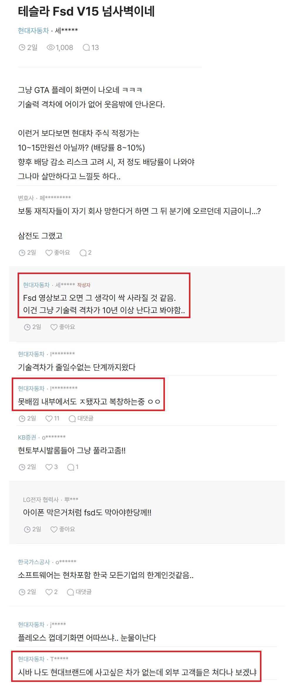

- 베끼지도 못할정도라 내부에서 ㅈ됐다고 복창 중
- 현차 직원조차도 현대에서 사고 싶은 차가 없음
노조이슈도 모자라 포티투닷 직원들과의 갈등, 저런 사내 분위기까지 ㄷㄷ
혁신이든 도전이든 결국 현차 직원들이 해내야 하는건데 앞으로 험난해보이긴함

- 베끼지도 못할정도라 내부에서 ㅈ됐다고 복창 중
- 현차 직원조차도 현대에서 사고 싶은 차가 없음
노조이슈도 모자라 포티투닷 직원들과의 갈등, 저런 사내 분위기까지 ㄷㄷ
혁신이든 도전이든 결국 현차 직원들이 해내야 하는건데 앞으로 험난해보이긴함
걍 500조로 코카콜라같은거나 인수해서 고정수익이나 만들어주세욤 ㅠㅠㅠㅠ
삼성이나 하이닉스는 일종의 부품사야 B2B 사업으로 싸이클 도래 및 AI 확장에 따른 수혜를 입은거지
현대차는 완성차 기업이라서 시장에서 경쟁력이 없으면 그냥 디지는거야
물론 갑자기 자율주행이 가능해지면 다시 부활하겠지만 그걸 기대하기 힘든 현실이지
그리고 사내에서도 자율주행이 되니마니 제대로 알고 있는 사람은 극소수일꺼야 대부분은 뜬소문만 듣고 있겠지
ㅇㅇㅋㅋ 그래서 그 대다수가 뜬소문 기반으로 블라에서 쌉소리 하는걸로 근들갑 떨게 없단얘기임 ㅋㅋ
6~7년뒤에도 답 없으면 테슬라 살거임
한 5년뒤엔 따라잡겠지만 문제는 2년정도 있으면 이제 말그래로 자동차가 도로에 넘쳐날텐데 수동차를 5년은 더 끌어야한다는거.. 그리고 앞으로 2년동안 나오는 현기차는 영원히 수동차로 남을 예정이라
궁금한게 있는데 벤비아 르쌍쉐 소프트웨어는 어떰???
현기보다 나을건 없는 수준임?
르쌍쉐보단 훨씬 낫지
전통차회사중에 소프트웨어 질된데 없는 수준임. 그나마 지엠? 한국 가는 르는 몰루
르노: 지리차
쌍용: 아..
쉐는 모르겄다
쌍용 소프트웨어는 그냥 펜티엄4 쯤이라 보면 됨
벤비는 그래도 어느정도 대응중 아는 폭바랑 같이 1,2년전 먼저 ㅈ됨
나을거 없음. ㅋㅋㅋ
테슬라가 독보적인거고, 중국이 따라가는게 용한거지. 나머지는 거기서 거기임.
테슬라 이제 승차감 소음만 잡으면 그냥 1황 되는거 시간문제임
차 자체를 못만드는 문제가 있음. 시버트럭가튼거처럼 차 자체를 못만듬
차체에 대한 노하우는 그렇게 단기간에 만들어지는게 아님.
전기차 특성상 무게중심이 낮고 분배가 잘되어 있어서 그나마 낫지만 그만큼 전반적인 차체와 현가장치에 대한 노하우는 전통 제조사들에 비비기 쉽지 않음
물론 한국 소비자가 그런걸 따지는 부류는 아니지
근데 펠리세이드 차 잘뽑지않았음???? 2도괜찮나몰겟네
삼성도 그렇고 하드웨어는 잘 뽑는데, 소프트웨어가 좀 그래.
기아차는 SUV 그나마 좀 팔리는거 같은데
현대는 진짜 ㅈ된거임?
재벌3세 경영으로 넘어가면 저래 되는거 통계자료에 있던데
수순임 ㅋㅋㅋ 어떻게 자수성가를 이길수있겠음
포티투닷은 그 많은 돈을 도대체 어디에 쓴거임?
개발하는척 허송세월한거지 뭐
많은 돈 조차 아님
테슬라가 AI개발에 돈 쓴거 생각하면
현대차는 걍 애초에 덤비질 말던가
아님 회사 미래 모조리 배팅하고 진짜 과감하게 투자했어야했음
테슬라가 3만원으로 맛있는 치킨 시켜먹을때 현대차가 1만원으로 치킨 사먹을려고 하는데 치킨집 추천 좀 이러고 있었다고 보면 된다
개발하는척 중국 비전 기술 사오자 하는데 씀
1. 현기차는 차량 자체의 기본기가 딸림
엔진문제는 여전하고 내구성도 여전히 안좋음
2. 하지만 종합적인 가격을 따졌을땐 합리적이여서 잘나갔던거임
3. 근데 최근에 가격 쳐올린게 돈없어서서 외제차 탄다는 수준으로 가격을 너무올려버림
4. 그럼이제 진짜로 차량 자체의 매력도를 따져야지?
기본기 현대보디 좋은데 요즘 별로 없는데??
일단 엔진은 여전히 GDI 밀고 있어서 근본적인 문제점 해결 안됨. 결함이 부족함으로 인식되는걸 넘어 원래 그런건줄 아는 소비자가 되어버림.
하체 셋팅이나 수준보면 가격대비 그렇게 좋은 상태는 아님. 심장과 하체는 아반떼인데 상체는 산타페. 말 다했지.
그런 와중에 편의사항과 옵션질로 착시효과 만들고 있는게 현재 현기차의 실정인데 소비자가 이젠 가격 때문에 이거에도 질림.
GDI타령하네 지금 GDI엔진 안쓰는 회사가 어디있다고 그리고 심장이 아반떼 수준이라는데 설마 1.6터보 하이브리드 보고 배기량이 똑같으니 아반떼라고 하는 말은 아니지?
e gmp까지 나왔을시점에는 선두주자가 맞음. 그리고 이후에 회생제동이랑 아온n 같은 애들 연달아 미친성능이맞음 . 그러나 내연기관은 잘모름 .
e-gmp 잘 뽑았으면 거기서 2세대를 빨리 준비했어야 하는데 아이오닉5 뭐 발전도 없이 계속 찔끔찔끔 부분 변경하면서 세월 다 날림
병신들이 바로 2세대 준비하면서 카메라 위치라도 똑같이 달고 데이터 수집이라도 아이오닉5 4년차부터 준비했어야지
21년에 아이오닉5 나옴 5년동안 뭐한거임 대체 ㅅㅂ
잘 팔렸는데 돈이 왜 없음?
현대 돈 많은데...?
아 잘못봄
??????? 너 차 없지?
아는 형의 친한 지인이 엄청 부자고 차에 관심도 많아서 몇개월마다 차를 바꿨고 비싼 차도 많이 타봤지만
모델 X FSD 되는거 타보고 나서는 차를 못 바꾼다고 하더라고. FSD가 없는 예전으로 돌아갈 수가 없대 ㅋㅋ
운전하는 재미 vs 자동 딸깍
원래 딸깍한번 맛보면 못돌아감
첫차로 쏘나타 다음으로 코나, 스포티지 하브 타다 지금 모델 y 왔는데 진짜 최고 만족이다.
스포티지 하이브리드도 솔직히 어디 부족한거 없는차긴 했는데 HDA랑 오토파일럿 비교하면
믿고 맡길수 있는 정도가 오토파일럿이 훨씬 큼 승차감도 솔직히 스포티지 하브랑 비교하면 거기서 거기인데
공간감, fsd에 대한 기대감 등등 빨리 저 리얼리티뷰인가 저거 패치 되면 좋겠다
스포티지 하브도 진짜 좋다던데 크흠....난 YL로 바꾸고싶다 ㅠㅠ
10년이 뭐야 15년 뒤쳐진 거 아냐?
전통 차회사들중 그래도 현기만한데가 없음. 예전에 suv 라인업 부족하단 소리 들을 때도 결국 빠르게 대처 했고 전동 아 라이너 부족하다는 얘기 들었을 때도 지금 전통차 회사 중에 전기차랑 하이브리드 라인업 가장 잘 갖춰진 회사는 결국 현대차 뿐임
그것 맞지.
테슬라가 예외인거지. 전통 자동차 메이커 중에서는 현기만한 곳도 없음.
중국차는 중국이라는 나라를 업고 가는거라 가능한거고.
포티투닷 이름부터 신뢰가 팍팍간다 ㅋㅋㅋ
영포리투닷
저래서 AI에 사활을 걸고 돈이 모이는 건가싶네
ㅋㅋㅋ 이러다 또 2~3년뒤에 어찌될지 모름
위에서 그거보고 '너네 이정도 만들어야해' 라고 던쟈두면 일하는 사람 입장에선 존나 깝깝할듯
내년엔 순이익 500조인데여
지금 주가 정당화되려면 무조건 3년뒤 본사에 핵폭탄 터져야됨